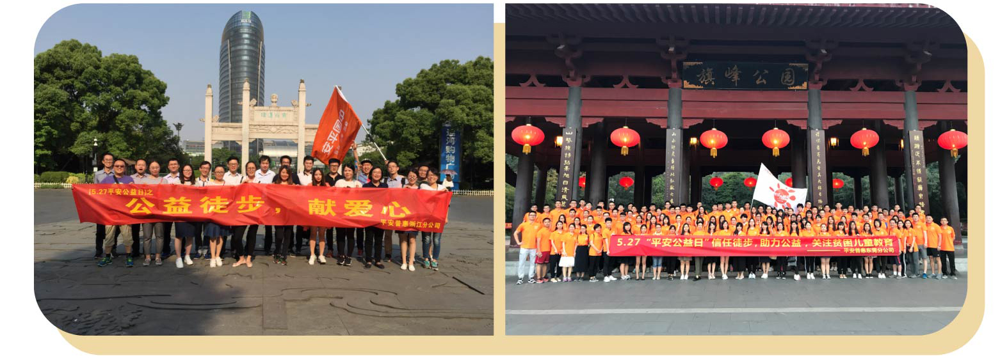
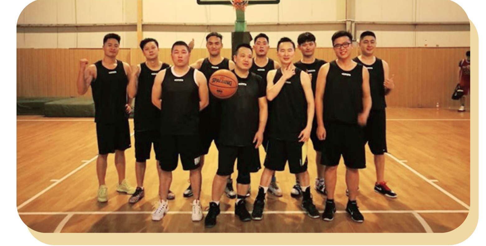
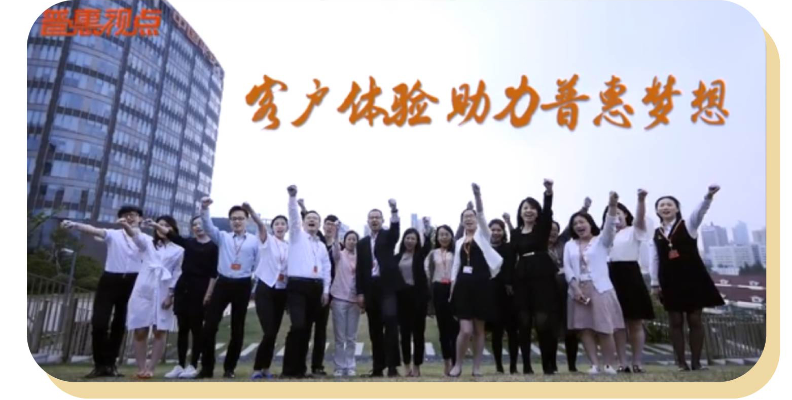

《普惠视点》已经默默地陪在大家身边一年了，
这是由普惠人自创自编，围绕普惠人和大普惠发展点点滴滴的栏目。
感谢大家的一路陪伴和支持！
新一期新一期《普惠视点》不仅在职场观看,
还可以随地随地、各种姿势通过手机观看节目（想想还有点小激动呢~~）
视点换新貌，只为给你不一样的收看体验。
本期视点，带大家走进清新范儿咖啡厅，以最悠闲的姿态一起聊聊普惠的大事、小事、身边事。
用微薄的一点力量，给社会一份大爱，普惠推出了“信任接力，成长不孤‘读’公益活动，全国各大机构积极性应，还自发开展了格式各样的公益活动。
普惠篮球健儿们在集团“工会杯”篮球赛中取得了不错的成绩，现场第一战况独家转播。
“听客户的声音，看我们的改变；谈客户的体验，赢我们的明天”，听口号，识部门，不用怀疑，本期做客《普惠微剧场》的就是wuli客户体验大家庭~
更多精彩内容，点开下方视频在线观看吧！片尾还有彩蛋哦~